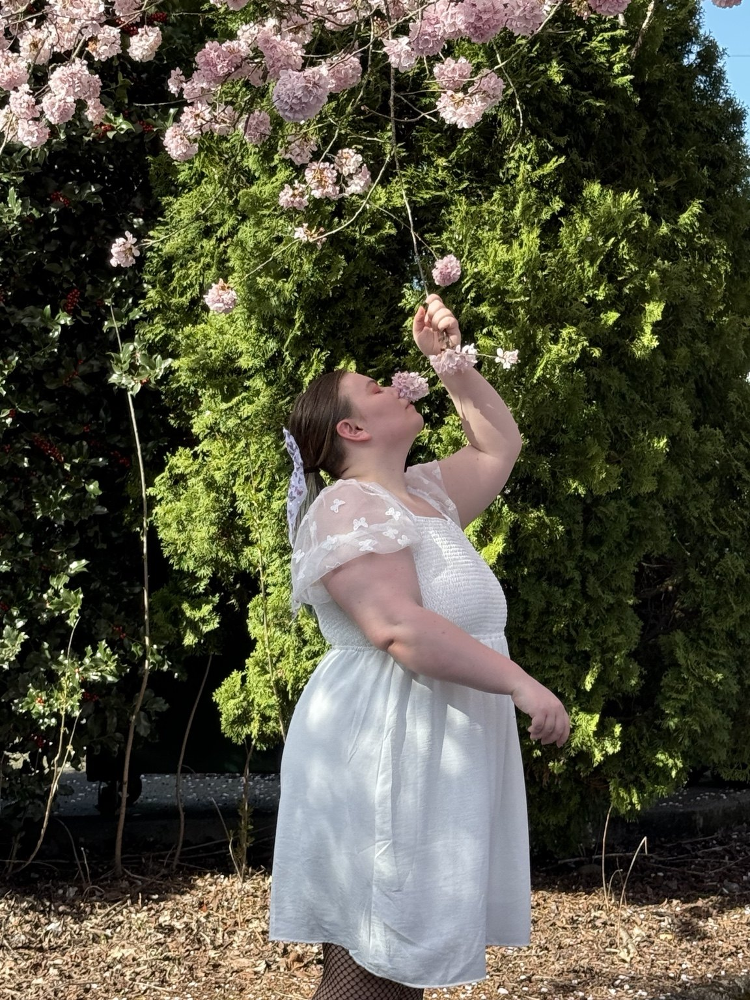

Portraits
Soft, expressive portraits for individuals, couples, artists, seniors, professionals, and anyone who wants to be photographed with care.
romantic • atmospheric • honest
Petal & Frame captures soft light, quiet emotion, natural movement, and the kind of beauty that does not need to perform to be seen.

Featured portfolioA softer kind of storytelling
Petal & Frame is built around gentle direction, natural light, and images that feel intimate without feeling forced. The style is warm, calm, reflective, and quietly cinematic.
Soft, expressive portraits for individuals, couples, artists, seniors, professionals, and anyone who wants to be photographed with care.
Couples, maternity, newborn lifestyle, pets, and tender milestones documented with warmth and emotional honesty.
Landscapes, florals, water, weather, animals, and abstract imagery available for galleries, prints, and visual storytelling.
Portfolio preview
The portfolio is curated around softness, emotional cohesion, weather, reflection, atmosphere, and visual storytelling.
Mini Sessions
Quick portraits, headshots, senior photos, pet portraits, seasonal minis, and short creative updates.
Most Popular
Relaxed 60–90 minute sessions for couples, maternity, lifestyle portraits, branding, and pet-and-owner storytelling.
Creative Editorial
Longer artistic sessions with wardrobe, mood direction, multiple locations, and cinematic atmosphere.
“The goal is not simply to preserve how something looked, but how it felt to exist inside that moment.”
Now booking